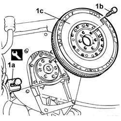

1024B22 ENGINE FLYWHEEL - R.R. with clutch removed for versions with manual gearbox
- Path
- Procedures > 10 ENGINE > 1024 CRANKSHAFT AND FLYWHEEL > 1024B ENGINE FLYWHEEL > 1024B22 ENGINE FLYWHEEL - R.R. with clutch removed for versions with manual gearbox
- Kind
- repair procedure (removal / refitting; the operation number is the code)
- Applies to
- engines: 2.0 TB, 2.4 20V; all production periods
- Interactive page
- https://sloeber94.github.io/elrnDB-lThss/en/#/74785
Applies to: engines: 2.0 TB, 2.4 20V; all production periods
 Removing
Removing
 Refitting
Refitting1. With the flywheel lock (1a) fitted, undo the bolts (1b) and remove the flywheel (1c).
 | Description | Code | Function |
|---|---|---|---|
1a | Counter-torque | 1.860.846.000 | Engine flywheel lock |

Applies to: engines: 2.0 TB, 2.4 20V; all production periods
Refitting
Removing- Place the flywheel in its housing and secure it by tightening the bolts to the recommended torque.
 | Value - daNm | Fastening | Component | Ø |
|---|---|---|---|---|
. | 16 | Bolt | FLYWHEEL (MECH.) | M12 X 23.5 |
- Remove the flywheel lock
| Description | Code | Function |
|---|---|---|---|
. | Counter-torque | 1.860.846.000 | Engine flywheel lock |